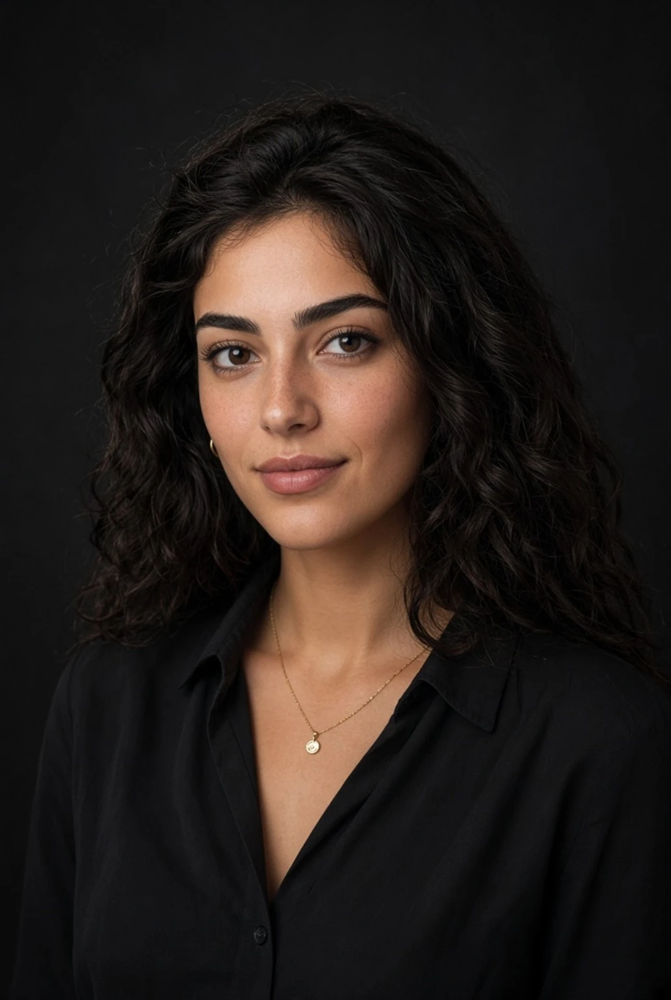

R / 01R-II · Prime
Alessandra Moretti
- Height
- 165 cm
- Bust
- 34C
- Time at rank
- 2 years, 4 months
Personality
Outgoing, witty, provocative and naturally flirtatious. Challenges authority and enjoys putting powerful people on the spot.
Confidential note
Formerly R-III. Her unexpectedly favorable reassessment may have been arranged by an influential admirer.